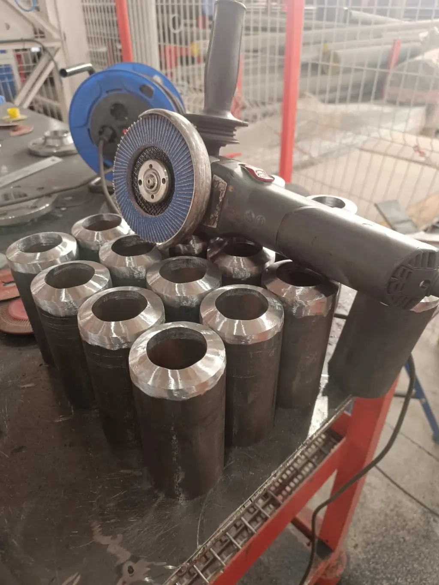
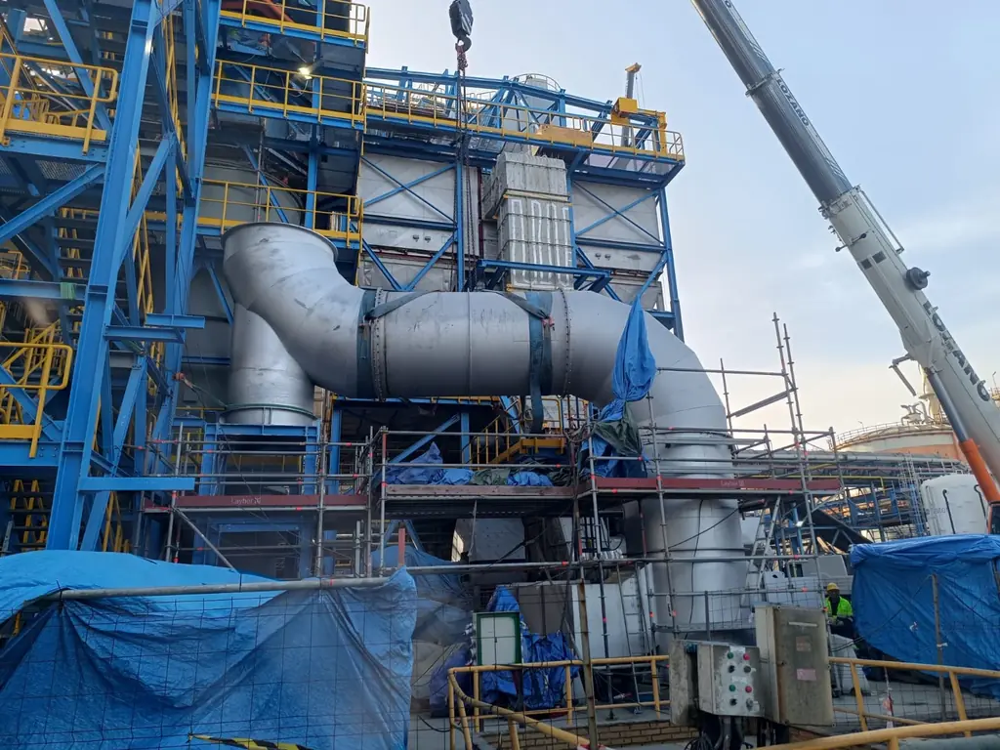
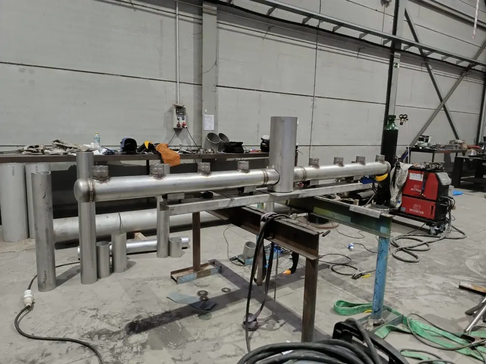
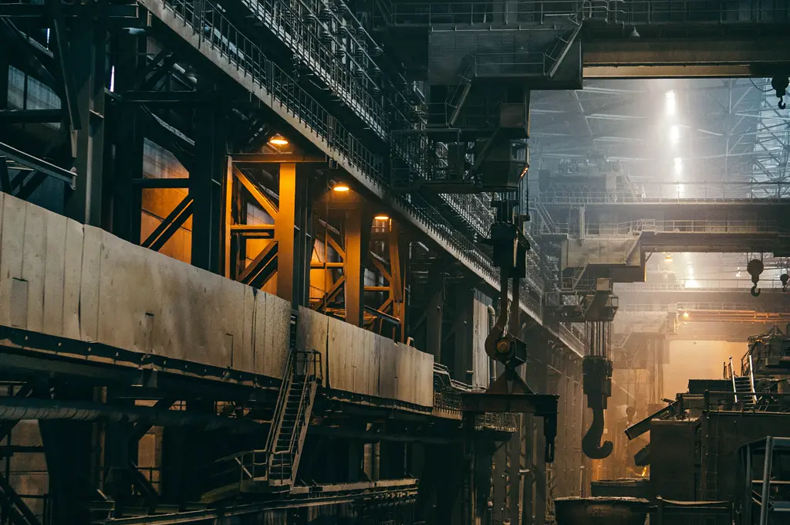

Espanha
Cameto
A STMetal disponibiliza mão de obra especializada para reforço das equipas de fabricação e montagem, de acordo com as necessidades do projeto.

Soluções industriais · Metalomecânica
Empresa especializada em serviços integrados de metalomecânica e na cedência de mão de obra altamente qualificada para o setor industrial.
Atuação nacional e internacional
Soluções inovadoras, eficientes e seguras.
Excelência técnica em cada projeto.
01 — Quem somos
A STMetal é uma empresa especializada em soluções metalomecânicas para o setor industrial, com capacidade para executar serviços de fabricação, montagem, soldadura e manutenção industrial.
Da preparação técnica à execução em obra, adaptamos as nossas equipas e soluções às necessidades de cada projeto.
Qualidade · Segurança · Compromisso
Tubagem · Caldeiraria · Estruturas metálicas
Aço carbono · Inox · Super Duplex · P22/P91/P92
Montagem · Instalação · Execução em obra
Intervenção e apoio às necessidades de manutenção industrial.
02 — Competências
Sete áreas de competência que sustentam os projetos da STMetal.

01
Fabricação, preparação e montagem de sistemas de tubagem para aplicações industriais.

02
Experiência na preparação, fabricação e soldadura de materiais destinados a aplicações industriais de elevada exigência técnica.

03
Preparação e execução de soldaduras para aplicações industriais, incluindo materiais de elevada exigência técnica.

04
Do corte à preparação final para montagem em obra. Pré-fabricação controlada para otimizar a execução e reduzir o tempo de intervenção em obra.

05
Fabricação de componentes metálicos à medida para diferentes aplicações industriais.

06
Fabricação e montagem de estruturas para aplicações industriais e civis.

07
Montagem e instalação de componentes e estruturas em ambiente industrial, de acordo com os requisitos técnicos e de segurança de cada projeto.
03 — Os nossos princípios
Os princípios que orientam cada equipa e cada projeto da STMetal.
Rigor técnico em todas as fases do projeto.
Planeamento e execução orientados para a segurança.
Equipas técnicas especializadas e experiência industrial.
Adaptação às necessidades e dimensão de cada projeto.
Cumprimento dos requisitos e objetivos definidos com o cliente.
Foco na qualidade do serviço e satisfação do cliente.
04 — Experiência industrial
Projetos e serviços executados para parceiros industriais.
Espanha
A STMetal disponibiliza mão de obra especializada para reforço das equipas de fabricação e montagem, de acordo com as necessidades do projeto.

Espanha
Trabalhos de fabricação e montagem de tubagens industriais, integrando as equipas e necessidades específicas do projeto.

Espanha
Prestação de serviços de manutenção industrial, com intervenção das equipas STMetal de acordo com as necessidades operacionais do cliente.

Itália
Execução de serviços de montagem e soldadura especial de tubagens, com foco em trabalhos de elevada exigência técnica.
Confiança construída através da experiência industrial.
05 — Qualidade
Seis pilares que sustentam cada projeto da STMetal.
Preparação técnica antes da execução.
Acompanhamento das dimensões e requisitos do projeto.
Execução por profissionais qualificados.
Controlo das juntas e requisitos técnicos.
Procedimentos orientados para uma execução segura.
Experiência em Super Duplex · P22 · P91 · P92.
06 — Porquê nós
As razões que fazem da STMetal o parceiro certo para o seu projeto.
Experiência em fabricação, soldadura e montagem industrial.
Super Duplex · P22 · P91 · P92.
Fabricação · Soldadura · Montagem · Manutenção.
Profissionais adaptados às necessidades de cada projeto.
Capacidade de reforçar equipas e executar diferentes tipos de trabalhos.
Atuação nacional e internacional.
07 — Como trabalhamos
O processo que aplicamos do primeiro contacto à entrega final de cada projeto.
Entendemos o projeto e os requisitos técnicos.
Definimos recursos, equipa e prazos.
Fabricamos, soldamos, montamos ou intervimos conforme o projeto.
Acompanhamos qualidade e requisitos técnicos.
Concluímos o trabalho com foco na qualidade e satisfação do cliente.
08 — Contactos
Envie-nos o seu pedido pelo canal que preferir. Responderemos o mais brevemente possível.
Portugal
Espanha
Orçamentos e informações
Resposta o mais breve possível

09 — Recrutamento
Procuramos profissionais qualificados para obras nacionais e no estrangeiro. Envie o seu CV e certificados.
10 — Orçamento
Avaliação técnica · Orçamento · Solução personalizada
Responderemos o mais brevemente possível.
R. do Cruzeiro, UBR, Portuguinho, Lt 13, 2.º Dto — 2400-441 Leiria, Portugal